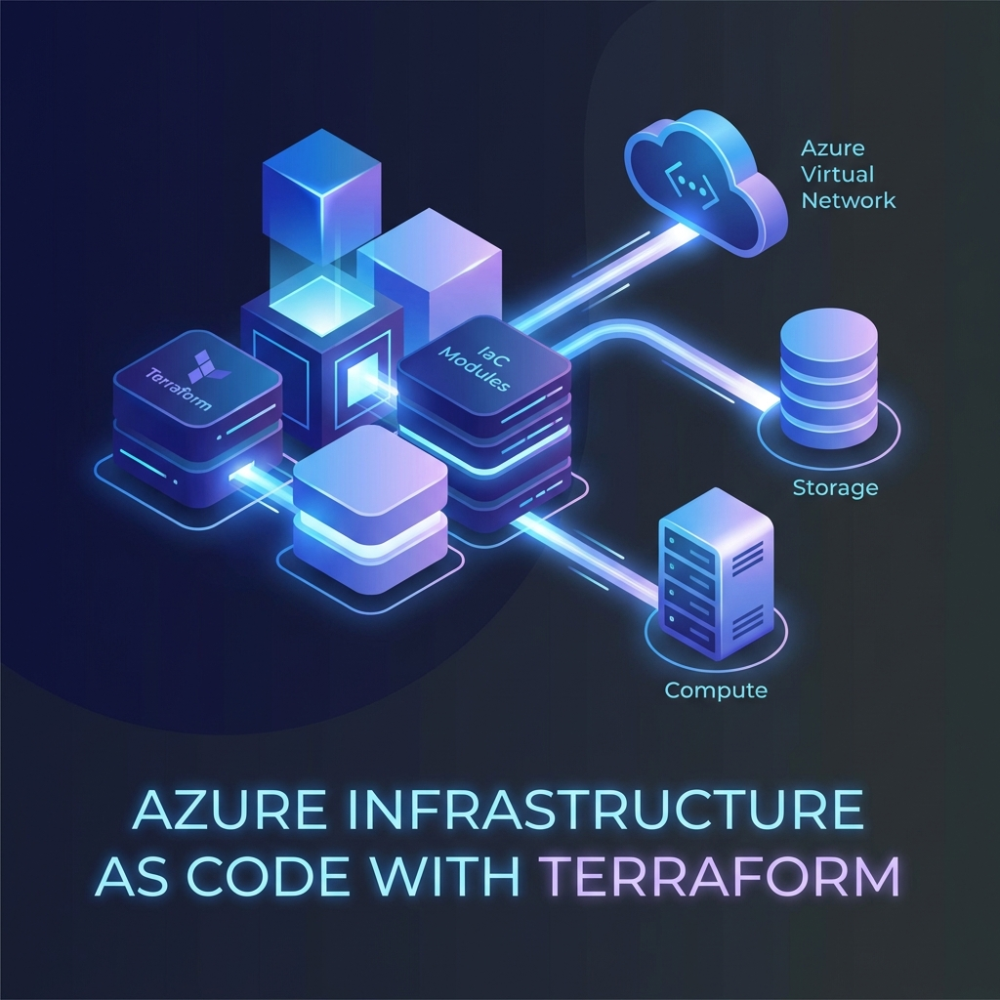
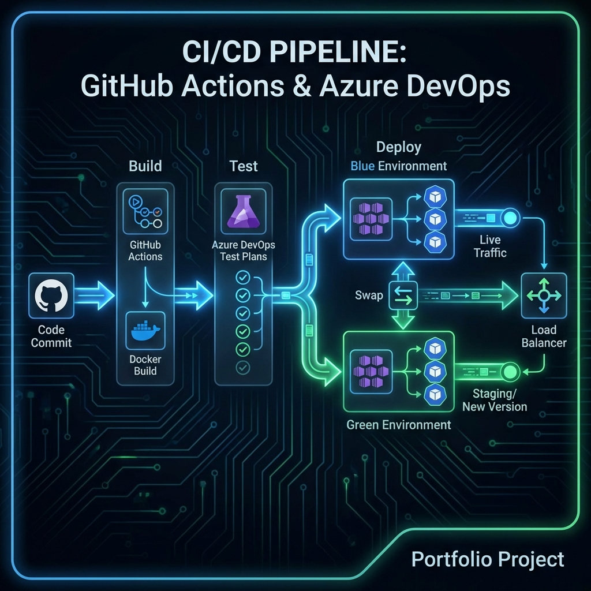
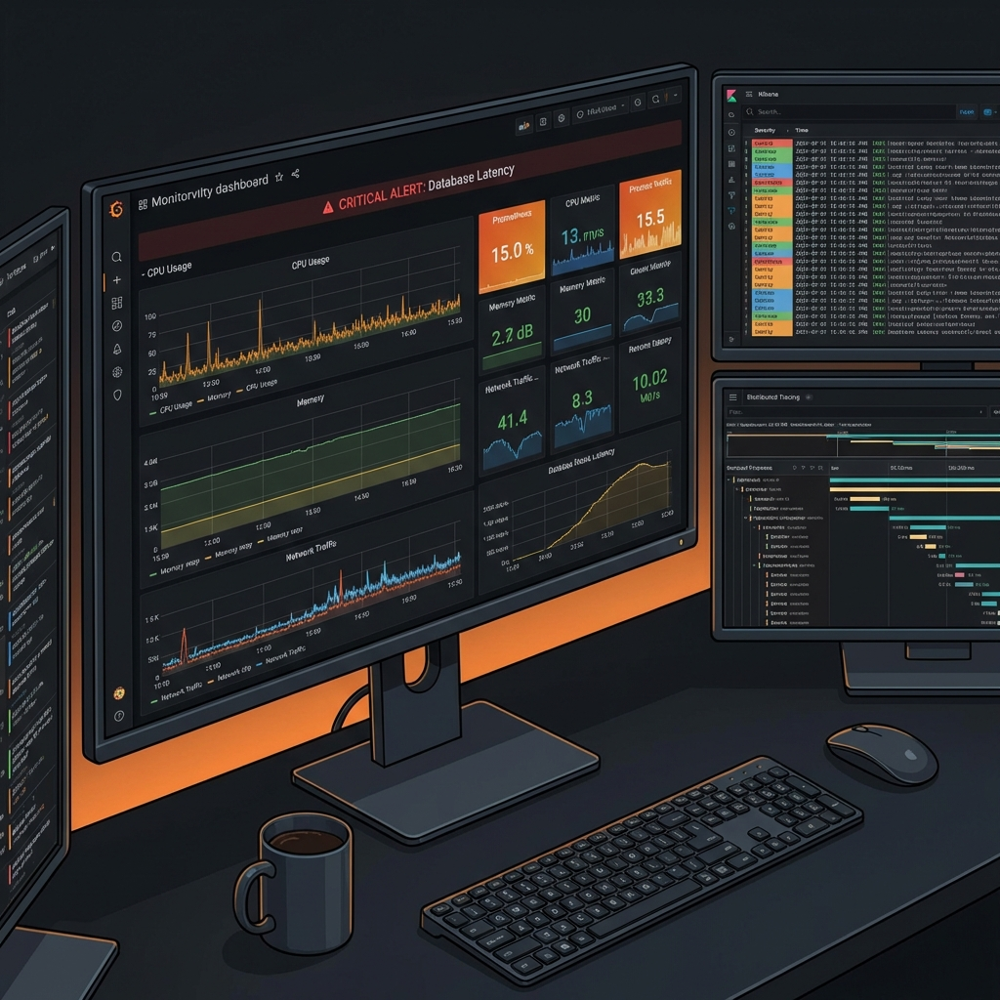
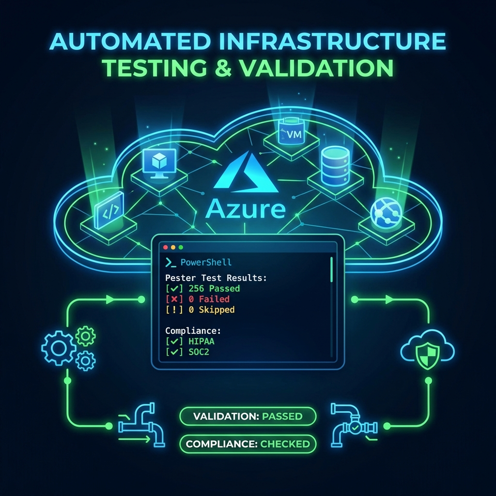
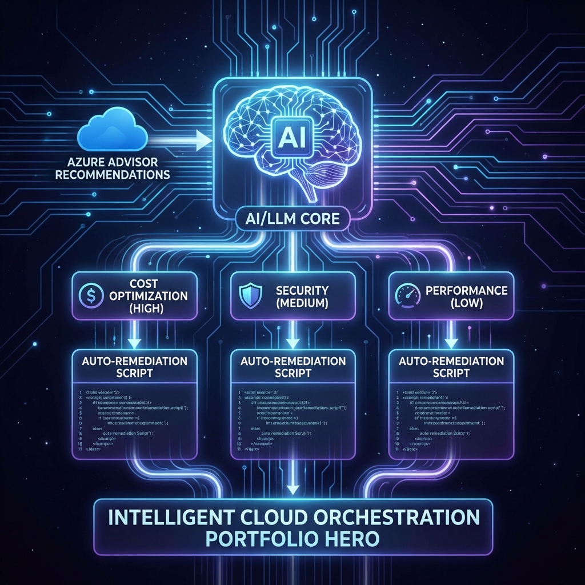

Azure Terraform Modules
Reusable Terraform module library for rapid Azure resource deployment. Production-ready modules with best practices for networking, compute, storage, and security services.
I'm Swarup, specializing in Cloud Infrastructure, DevOps automation, and Agentic AI systems. Building intelligent, scalable solutions for modern challenges.
Recent work that I'm proud of

Reusable Terraform module library for rapid Azure resource deployment. Production-ready modules with best practices for networking, compute, storage, and security services.

Automated deployment pipeline with blue-green deployments, automated testing, and rollback mechanisms. Achieved 99.9% uptime while increasing deployment frequency from weekly to multiple times per day.
Agentic AI system that automates infrastructure monitoring, incident response, and root cause analysis. Uses RAG and autonomous decision-making to reduce MTTR by 60% and automate 80% of routine operations tasks.

Comprehensive monitoring and observability solution with distributed tracing, log aggregation, and predictive alerting. Provides real-time insights across microservices architecture with custom SLO dashboards.

Automated infrastructure testing framework using PowerShell Pester to validate Azure resource configurations. Reduced validation time by 98% — from days to minutes.

Intelligent recommendation engine that analyzes Azure Advisor suggestions using LLM to prioritize, categorize, and auto-generate remediation actions for cloud optimization.
Tools and frameworks I work with
I'm a Cloud Infrastructure and DevOps specialist with 4+ years of experience building scalable, resilient systems. I architect multi-cloud solutions and implement AI-driven automation to optimize operations.
My expertise spans infrastructure as code, container orchestration, and building intelligent agentic AI systems that automate complex DevOps workflows. I'm passionate about combining cutting-edge AI with robust cloud infrastructure.
Currently exploring the intersection of LLMs and infrastructure automation, building agents that can autonomously manage, monitor, and optimize cloud environments. Always learning, always innovating.
Common questions about my work and expertise
I follow an Infrastructure as Code (IaC) approach using Terraform for Azure deployments. I build reusable, modular templates with standardized naming conventions, integrate automated testing with Terratest, and implement GitOps workflows through Azure DevOps or GitHub Actions. Every deployment includes post-deployment validation using Pester tests to ensure configurations match expected state.
I've built zero-downtime deployment pipelines using GitHub Actions and Azure DevOps with blue-green deployment strategies. My pipelines include automated testing, security scanning with Trivy, code quality checks with SonarQube, and automated rollback mechanisms. I've helped teams increase deployment frequency from weekly to 50+ deployments per day while maintaining 99.9% uptime.
I'm building agentic AI systems that automate complex DevOps tasks. For example, I've created an intelligent agent that analyzes Azure Advisor recommendations using LLMs, prioritizes them based on business impact, and auto-generates remediation scripts. I've also built RAG-based systems that help teams query infrastructure documentation using natural language, reducing MTTR by 60%.
I have hands-on experience with Prometheus, Grafana, ELK Stack (Elasticsearch, Logstash, Kibana), Jaeger for distributed tracing, and Azure Monitor. I focus on building comprehensive observability platforms that combine metrics, logs, and traces to provide actionable insights. I've implemented predictive alerting that prevents incidents before they impact users.
I own incidents end-to-end: from initial triage using monitoring dashboards, through root cause analysis with distributed tracing and log correlation, to implementing preventative solutions. Every incident becomes a learning opportunity — I document findings in runbooks and automate recurring issues. My goal is to reduce MTTR while preventing similar incidents through proactive automation.
I specialize in Azure with deep expertise in AKS, App Services, Azure SQL, VNets, Azure DevOps, and Azure AI Foundry. I also have experience with AWS (EC2, EKS, Lambda) and Google Cloud. I'm comfortable architecting multi-cloud solutions and implementing cloud-agnostic practices using Terraform and Kubernetes.
I hold multiple Azure certifications including Azure Administrator Associate (AZ-104), Azure DevOps Engineer Expert (AZ-400), and Azure Solutions Architect Expert (AZ-305). These certifications validate my expertise in cloud administration, DevOps practices, and designing scalable Azure solutions. I continuously update my skills as Azure evolves.
I have 4+ years of experience in Cloud Infrastructure and DevOps, with a strong focus on Azure. During this time, I've managed 50+ cloud deployments, achieved 99.99% uptime for production systems, and led multiple automation initiatives that significantly improved operational efficiency. I combine hands-on technical skills with a continuous improvement mindset.
I blend traditional DevOps practices with cutting-edge AI automation. While I ensure solid fundamentals like IaC, CI/CD, and observability, I also integrate LLM-powered tools to accelerate workflows — from auto-generating remediation scripts to building intelligent agents that handle routine operations. I believe the future of DevOps is AI-augmented, and I'm actively building that future.
Have a project in mind? I'd love to hear about it. Send me a message and let's create something amazing.
tech.swarupdas@gmail.com
Bengaluru, India
Open to opportunities